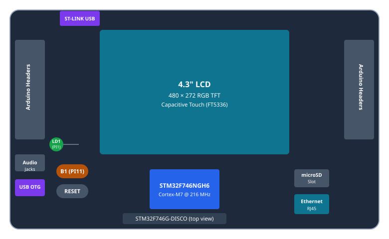
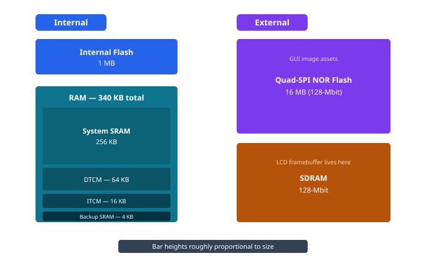

STM32F746G-DISCO board overview
A Discovery kit is a ready-to-run development board from ST that combines a microcontroller, a set of useful peripherals, and an onboard debugger on a single PCB. You do not need any extra hardware: plug a USB cable into the ST-LINK connector, install the tools, and you can immediately flash and debug your code. The STM32F746G-DISCO adds a 4.3-inch touchscreen, external RAM, and external flash, making it a great starting point for learning both bare-metal embedded programming and graphical UI development.
At a glance
| Feature | Detail |
|---|---|
| MCU | STM32F746NGH6 — Arm Cortex-M7 @ 216 MHz |
| Flash | 1 MB (internal) |
| RAM | 340 KB (256 KB system SRAM + 64 KB DTCM + 16 KB ITCM + 4 KB backup) |
| Display | 4.3″ 480×272 RGB TFT-LCD with capacitive touch |
| Quad-SPI Flash | 16 MB (128-Mbit) external NOR Flash |
| SDRAM | 128-Mbit external SDRAM |
| Debugger | Onboard ST-LINK/V2-1 (debug + mass storage + virtual COM port) |
Board layout

Memory

The Cortex-M7's internal RAM (340 KB total) sounds generous until you consider the display. A single full-screen framebuffer at 480×272 pixels in 16-bit colour takes about 261 KB — almost all of the internal RAM on its own. That is why the board includes 128-Mbit of external SDRAM: the LCD framebuffer (the in-memory image of the screen that the display controller reads out continuously) lives there, leaving the fast internal SRAM free for your application data and stacks. The 16 MB Quad-SPI NOR Flash sits alongside it, typically used to store larger GUI assets such as fonts, icons, and background images that cannot fit in the 1 MB internal flash.
Display & graphics
The STM32F746 drives the LCD panel through its built-in LTDC (LCD-TFT Display Controller), which continuously streams pixel data from the framebuffer in SDRAM directly to the panel — your CPU does not have to do anything once the frame is ready. For fast 2D drawing operations (fills, blits, alpha blending), the Chrom-ART accelerator (DMA2D) offloads the work from the CPU entirely. Touch input is handled by the FT5336 capacitive touch controller, which communicates with the MCU over I²C and reports up to five simultaneous touch points. This combination of LTDC + Chrom-ART + capacitive touch is precisely what makes the board an ideal target for TouchGFX and similar embedded GUI frameworks.
Parts used in these tutorials
The examples in this guide focus on a small, well-defined subset of the board's hardware:
- User LED
LD1connected to GPIO pinPI1 - User button
B1connected to GPIO pinPI11 - The ST-LINK virtual COM port (VCP) for sending serial debug output to your PC without any extra hardware
PI1, PI11) you will use in the next
sections. Move on when you feel comfortable reading the "At a glance" table without
referring back.